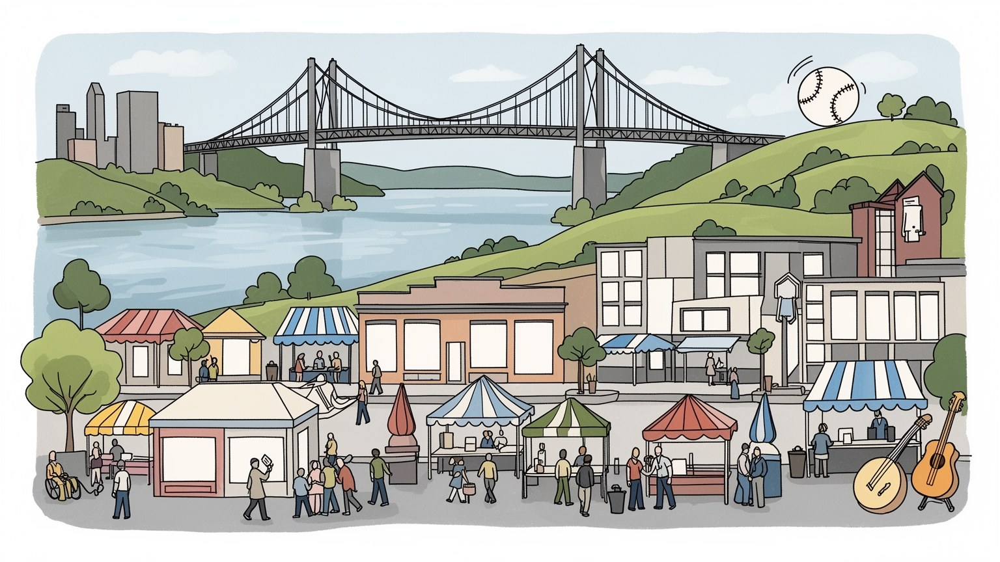
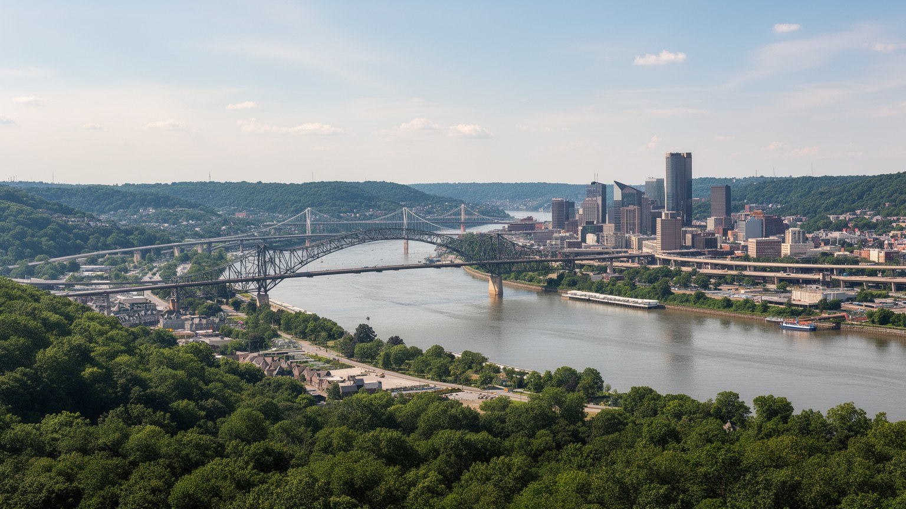
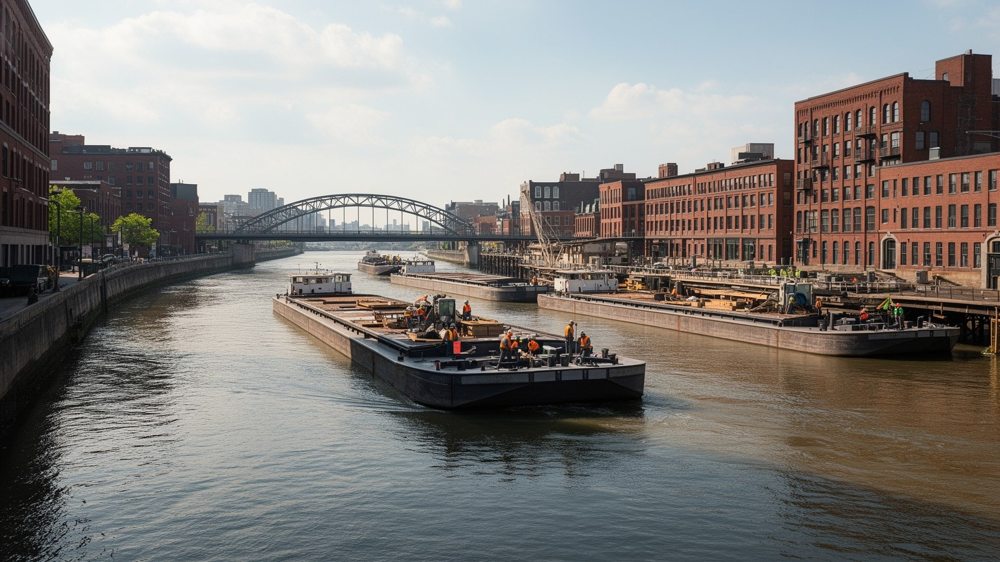
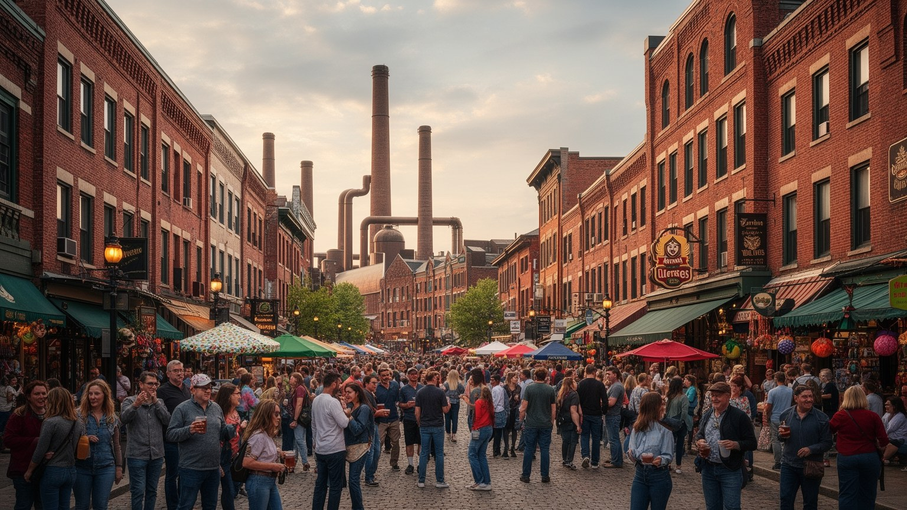
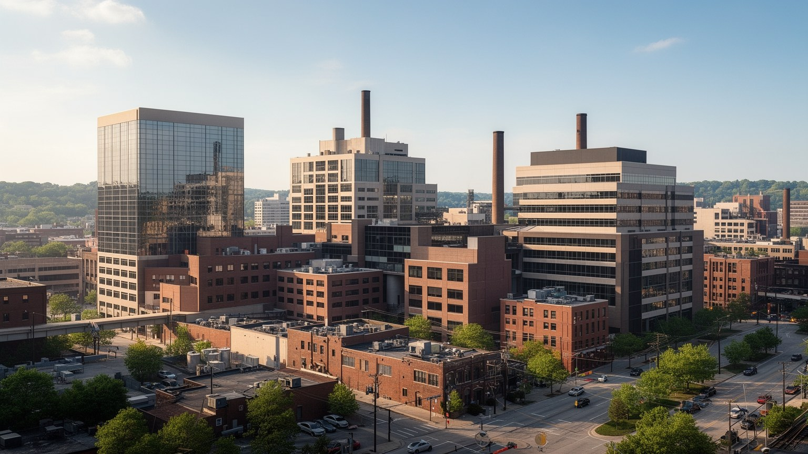
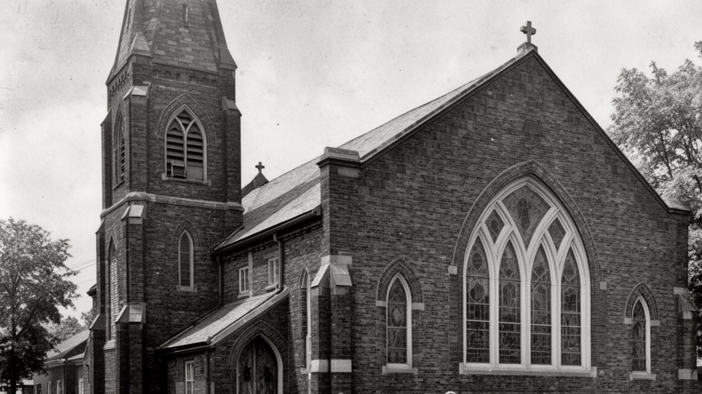
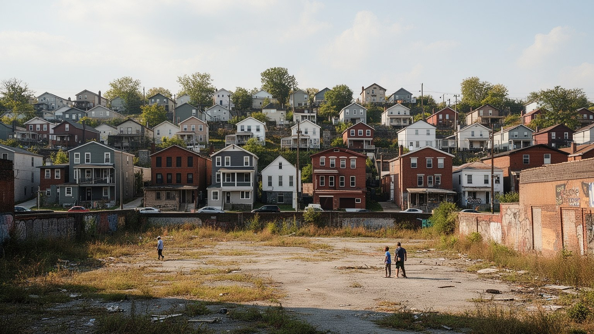
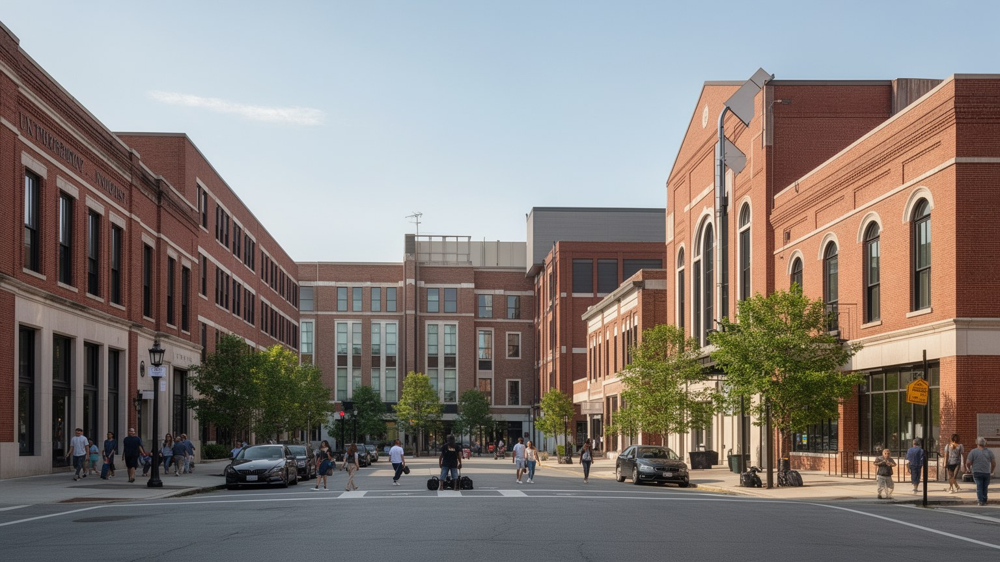
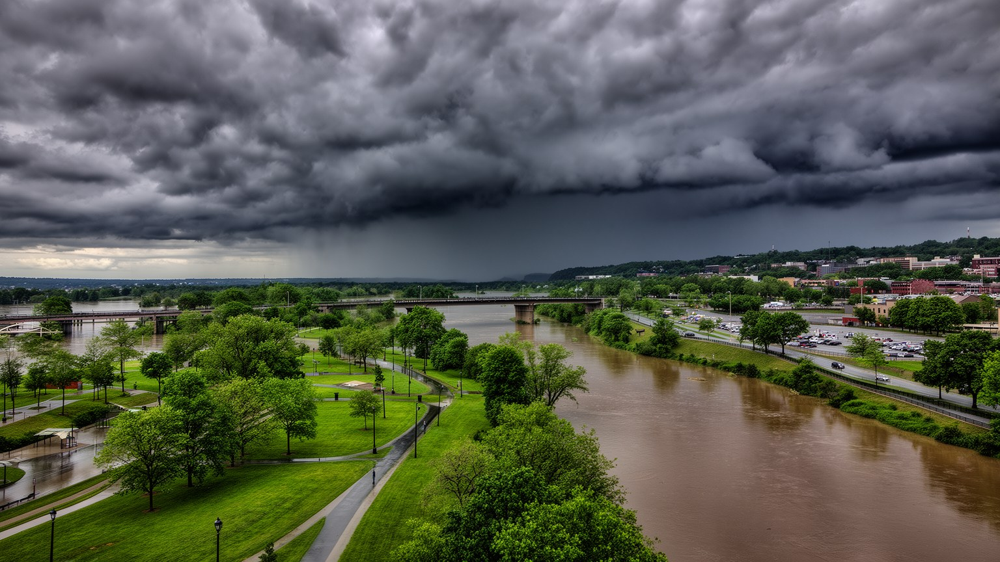
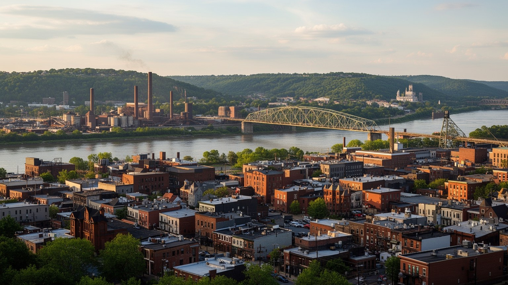

地政学
シンシナティはオハイオ川の北岸で、南北境界の商業と移動を担ってきた都市です。ケンタッキーとの橋、内陸港、鉄道、州境を越える通勤圏が、北東部、南部、中西部を結ぶ接点になります。危機管理も広域で問われます。

🇺🇸 アメリカ合衆国 / 北米 / World City Atlas
オハイオ川の内陸港から成長した丘陵都市。企業本社、医療、食品、物流、ドイツ系移民の遺産、黒人史、スポーツ、住宅地の格差が重なる、南北境界の都市です。
都市の骨格
シンシナティはオハイオ川の北岸にあり、ケンタッキー州側の都市と橋で結ばれます。川運、鉄道、丘陵住宅地、歴史的市場、企業本社、大学と病院が近い距離で重なり、内陸都市の厚みを見せます。

シンシナティはオハイオ川の北岸で、南北境界の商業と移動を担ってきた都市です。ケンタッキーとの橋、内陸港、鉄道、州境を越える通勤圏が、北東部、南部、中西部を結ぶ接点になります。危機管理も広域で問われます。
消費財、食品、小売、金融、航空部品、医療、大学研究が雇用を支えます。企業本社の意思決定と、倉庫、配送、病院、清掃、調理、介護、建設の現場労働が同じ都市圏で動いています。賃金と移動条件も大きな課題です。
ドイツ系移民の教会、醸造、音楽、祭りの記憶が残り、黒人教会、ユダヤ系施設、大学周辺の多宗教生活も都市を形作ります。宗教は名所よりも地域の行事と支援に深く現れます。祈りは地区の大切な安全網にもなります。
川辺、橋、市場、動物園、球場、美術館、丘上展望は訪問者を集めますが、住民には家賃、車依存、公共交通、学校差、洪水、薬物問題、空き家更新が日常の課題として残ります。名所と生活の距離が近い街でもあります。

シンシナティは、オハイオ川が大きく曲がる北岸の段丘と谷に広がる都市です。都心は川沿いの低地に置かれ、その背後に急な丘と尾根が立ち上がります。対岸にはニューポートやコビントンがあり、橋を渡るだけで州境を越える日常が続きます。この地形は景観を美しくするだけでなく、住宅地の分布、通勤の経路、洪水への備え、土地価格を左右します。川辺はかつて船着き場、倉庫、工場、鉄道の場所でしたが、現在は球場、公園、再開発住宅、イベント空間が増えています。丘の上には歴史的住宅地や大学、病院があり、谷底の都心とは違う生活圏を作ります。坂道と橋は都市の個性である一方、車を持たない人、高齢者、障害者には移動の壁になります。シンシナティを読むには、川を眺めるだけでなく、低地と丘上、北岸と南岸、古い工業地と新しい水辺利用がどう結ばれているかを見る必要があります。オハイオ川は境界であると同時に、都市を広域圏へ開く通路でもあります。水面に近い場所では公園化と浸水対策が同時に求められ、丘上では眺望の価値と公共交通の不足が並びます。橋の通行止めや坂道の凍結は、観光の不便ではなく通勤、救急、買い物の問題です。地形は日常の選択肢を静かに配分しています。地図の高低差を意識すると、同じ距離でも暮らしの負担が違うことが見えます。川沿いの再開発は都市の顔を明るくしますが、丘の裏側や谷間の地区を置き去りにすれば、都市の一体感は弱まります。

シンシナティの成長は、内陸港としての位置から始まりました。オハイオ川は農産物、豚肉加工品、木材、石炭、機械、生活物資を運び、蒸気船の時代にはミシシッピ川流域と東部市場を結ぶ回路になりました。川運は単なる輸送手段ではなく、倉庫、卸売、銀行、保険、印刷、食品加工、宿泊業を育てる都市の装置でした。やがて鉄道と道路が物流の中心になると、川辺の役割は変わりましたが、商業都市としての習慣は残りました。今日のシンシナティには消費財、食品、小売、金融、保険、航空部品などの企業が集まり、地域市場だけでなく全国流通を意識した仕事が多くあります。ただし企業本社の存在だけでは都市の全体像は見えません。倉庫、配送、店舗、コールセンター、病院、清掃、飲食、建設の労働が、会社の名前を日常の仕事へ変えています。内陸港の時代から続く商業の強さは、川沿いの地形と広域流通を読むことで初めて理解できます。川は過去の記念物ではなく、物流と都市イメージを今も結び直す軸です。市場や問屋の記憶は、現在の食品流通や小売本社の仕事にもつながります。港の作業が見えにくくなった後も、商品を包み、運び、売る都市の技能は残りました。商業都市としての厚みは、取引の数字だけでなく、朝の配送車、倉庫街、店舗の棚、家計の買い物へ表れます。利益の配分も問われます。

シンシナティの文化を語るうえで、ドイツ系移民の存在は欠かせません。十九世紀に多くのドイツ語話者が移り住み、教会、学校、新聞、音楽団体、醸造所、食料品店、社交クラブを作りました。オーバー・ザ・ライン地区の名称は、運河を越えたドイツ系住民の生活圏に由来し、煉瓦建築、教会、音楽ホール、路地の密度が移民都市の記憶を伝えます。ビール、ソーセージ、パン、祭りの文化は観光向けの演出だけでなく、労働者家庭の食卓や地域の結びつきから育ちました。一方で、反ドイツ感情、禁酒法、産業の変化、郊外化、貧困化によって、多くの施設や習慣は姿を変えました。近年の歴史地区再生は古い建物の価値を高めましたが、家賃上昇や住民の入れ替わりも招いています。遺産を読むとは、きれいな外観を保存するだけでなく、誰がそこで暮らし、働き、祈り、追い出されたのかを考えることです。ドイツ系の記憶は、シンシナティを中西部の一都市以上の、移民と労働の都市として見せています。祭りが観光化されるほど、生活文化と商品化の境目も曖昧になります。教会の鐘、音楽教育、醸造所跡、家族経営の店は、移民の成功だけでなく同化の圧力や貧困の記憶も含みます。保存された街並みを歩くときは、建築の美しさと住民の入れ替わりを同時に見る必要があります。遺産は祝う対象であると同時に、都市の変化を検証する手がかりです。

現在のシンシナティ経済は、古い川運だけでなく、企業本社、医療、大学研究、物流、食品、小売、金融によって支えられています。消費財企業は研究、広告、包装、流通、ブランド管理を集め、食品や小売の仕事は地域の雇用を広げます。病院群と大学は、医師、看護師、研究者、学生、清掃、給食、警備、事務、介護の仕事を生み、都市の昼夜の動きを作ります。医療と大学は高賃金の専門職を呼び込む一方、補助職やサービス職の賃金、勤務時間、通勤手段の問題も抱えます。航空部品や先端製造は技術系人材を必要とし、職業訓練や地域学校との接続が重要になります。企業が多い都市は安定して見えますが、所得の差、郊外と都心の通勤、医療へのアクセス、女性や移民の労働条件を見なければ実態は読めません。シンシナティの産業は、派手な金融都市ではなく、生活用品、医療、物流、研究を結びつける実務的な強さに特徴があります。その強さが住民の生活改善へ届くかが、次の課題です。大企業の寄付や大学研究は文化施設や再開発を支えますが、公共サービスを代替できるわけではありません。雇用の質、技能訓練、交通、保育、医療費を合わせて見て初めて、成長が地域へ広がっているか判断できます。産業都市の評価は、働く人が住み続けられる条件と切り離せません。成長の数字は、夜勤明けの通勤や保育の待ち時間にも表れます。

シンシナティは自由州オハイオの川岸にありながら、奴隷州ケンタッキーと向かい合う都市でした。この位置は、逃亡奴隷、自由黒人、廃奴運動、暴力、監視、労働市場の競争を同時に引き寄せました。川を渡ることは地理的な移動であるだけでなく、法的身分と安全を左右する行為でもありました。黒人住民は教会、学校、新聞、相互扶助組織を作り、差別の中で生活基盤を築きましたが、住宅差別、雇用差別、警察との緊張、学校格差は長く続きました。二十世紀の都市更新や高速道路建設は、黒人地区の分断と立ち退きを生み、資産形成の機会を削りました。現在も貧困、健康格差、銃暴力、薬物問題、投資不足は一部地区で深刻です。国立地下鉄道自由センターのような施設は重要ですが、黒人史を記念館だけに閉じ込めることはできません。教会、学校、住宅地、裁判所、橋、警察制度、雇用の現場をつなげて見ることで、シンシナティが南北境界の自由と不自由を同時に抱えた都市だと分かります。歴史を学ぶことは、過去の勇気を称えるだけではなく、現在の住宅、教育、健康、司法の不均衡を読むことでもあります。川の向こうへ逃げる物語と、都市の中で排除され続ける経験は連続しています。記憶を公共空間へ残すほど、現在の政策も具体的に問われます。橋と博物館だけでなく、普段の通学路や雇用の入口にも歴史は残ります。

シンシナティの暮らしは、都心、川辺、丘上、古い路面電車沿い、郊外的な住宅地で大きく違います。オーバー・ザ・ラインやダウンタウン周辺では歴史的建物の改修、飲食店、住宅開発が進み、観光と若い専門職を呼び込んでいます。一方、長く住んだ住民には家賃上昇、固定資産税、駐車、騒音、立ち退きの不安があります。丘上の地区では眺めと住宅の広さが魅力になる一方、坂道、公共交通の弱さ、雪や凍結、買い物への距離が生活を難しくします。別の地区では空き家、老朽化、鉛、水道、断熱、学校の評価、治安の問題が重なります。住宅の価格が比較的手頃に見えても、修繕費、車の維持費、通勤時間、医療への距離を含めると負担は軽くありません。シンシナティの住宅政策を考えるには、歴史地区の保存、手頃な賃貸、公共交通、学校、空き家再生、洪水リスクを一体で見る必要があります。街の魅力は、古い建物を磨くだけでなく、住み続ける人の生活条件を守れるかで決まります。地区ごとの違いは、単なる雰囲気ではなく、保険料、学校選択、買い物、医療、警察への信頼にも表れます。改修された通りのすぐ近くに、修理できない家や空き地が残ることもあります。住宅を見ることは、再開発の恩恵がどこで止まるのかを読むことです。近所に店とバス停と学校が残るかどうかが、家の価値以上に暮らしを左右します。住まいは都市参加の入口です。
シンシナティの食とスポーツは、都市の帰属意識を分かりやすく示します。独特のチリ、ドイツ系のソーセージや菓子、地域のビール文化、市場の食料品店は、移民史と労働者の食卓を現在につなげています。観光客には名物として見える料理も、住民にとっては家族の外食、試合の日の習慣、学校帰りの記憶です。野球のレッズ、アメリカンフットボールのベンガルズ、サッカーのクラブは、川辺や都心の公共空間を試合の日の祭りへ変えます。球場とスタジアムは再開発の核にもなりますが、公費負担、チケット価格、周辺の駐車、低賃金のイベント労働も問われます。食文化も同じで、飲食店のにぎわいは調理、皿洗い、配送、清掃、深夜勤務に支えられています。スポーツと食は都市を一つに見せますが、実際には参加できる人とできない人の差もあります。シンシナティを味わうことは、名物を消費するだけでなく、移民、労働、家族、地区の記憶がどのように週末の時間へ集まるかを見ることです。市場で買う食材、試合後の混雑、近所のバー、学校スポーツの募金は、公式な観光案内よりも生活の結びつきをよく映します。食とスポーツが強い都市ほど、価格、交通、治安、働く人の待遇も含めて考える必要があります。共同性は応援だけでなく、支える仕事から生まれます。だから名物の味は、都市労働の時間割とも結びついています。

シンシナティは規模のわりに文化施設の層が厚い都市です。音楽ホール、交響楽、オペラ、バレエ、美術館、現代芸術の施設、動物園、公共図書館、大学の公演や研究が、産業都市の硬いイメージを和らげています。十九世紀の移民コミュニティが作った合唱、器楽、祭りの伝統は、現在の芸術制度にも影を落とします。シンシナティ大学やザビエル大学などは、医療、工学、教育、芸術、人文社会科学の人材を育て、学生街の飲食、住宅、交通を動かします。しかし、文化と教育の資源があることと、すべての住民が利用できることは同じではありません。入場料、交通、学校区、家庭の余裕、治安への不安は、子どもや低所得世帯の参加を左右します。大学周辺の開発は地域に活気を生む一方、家賃上昇や住民の入れ替わりも起こします。文化都市としてのシンシナティを評価するには、立派なホールや博物館だけでなく、学校、図書館、地域劇場、公園で子どもが表現に触れられるかを見る必要があります。芸術施設は寄付文化と企業支援に支えられますが、公共教育が弱ければ観客も作り手も限られます。大学の知識を地域学校、病院、図書館、小さな劇場へ橋渡しできるかが、文化の厚みを決めます。学びの機会は都市の将来への投資です。文化の強さは客席の数だけでなく、放課後の練習室や図書館の机にも宿ります。若い世代が街で学び、発表し、戻ってこられる循環が重要です。

シンシナティの気候は湿潤で、夏は蒸し暑く、冬は雪、雨、凍結が混じります。春から夏の雷雨、オハイオ川の増水、支流の氾濫、斜面の排水、古い下水道は、都市の見えにくいリスクです。川辺の再開発が進むほど、水辺の魅力と洪水への備えを同時に考える必要があります。低地の道路や地下施設、駐車場、倉庫、住宅は浸水の影響を受けやすく、丘陵地では大雨が斜面崩れや道路閉鎖を招くことがあります。猛暑も重要です。屋外労働者、低所得世帯、高齢者、エアコンの弱い住宅、緑の少ない地区ほど健康被害を受けやすくなります。気候対策は堤防や排水だけでは足りません。日陰、街路樹、涼める公共施設、避難情報、保険、住宅修繕、公共交通、停電時の支援が一体で必要です。シンシナティの川は都市の魅力を作る一方、気候変動時代には生活の安全を試す存在でもあります。美しい水辺を使い続けるには、誰が危険な場所に住み、誰が備えへ届くのかを見なければなりません。災害時には言語、年齢、障害、車の有無が避難のしやすさを分けます。水害対策は不動産価値の保護だけでなく、低所得地区の健康と移動を守る政策でもあります。川と気候を生活基盤として扱えるかが、都市の信頼を左右します。暑さと水害への備えは、観光地の景観整備より地味ですが、住民の生命と都市経済を守る基礎です。毎年の雨と熱が、都市運営の実力を試します。

シンシナティは、世界的な巨大都市ではありませんが、都市を読む材料を豊かに持っています。オハイオ川の内陸港、南北境界の歴史、ドイツ系移民の文化、黒人住民の自由と差別の経験、企業本社、医療と大学、スポーツ、食、丘陵住宅地、再開発と空き家が近い距離で重なります。ここでは、都市の重要性は人口規模だけでは測れません。消費財や食品の企業が全国の生活に影響し、病院と大学が地域医療と研究を支え、橋と川が州境を越える日常を作ります。同時に、住宅差別、学校格差、公共交通の弱さ、薬物問題、洪水リスク、家賃上昇は、成功物語の背後に残ります。シンシナティを読むことは、中西部と南部、工業都市とサービス都市、歴史保存とジェントリフィケーション、企業の安定と労働の不安定さを同じ地図に置くことです。川岸の眺め、古い煉瓦建築、球場の熱気、教会の行事、市場の食卓をつなげると、この都市は内陸アメリカの複雑な縮図として見えてきます。大都市の速度ではなく、中規模都市の近さが、問題と解決の距離を短くします。橋を渡る通勤、丘を上がるバス、歴史地区の家賃、病院の夜勤、試合の日の混雑を一緒に見ると、都市の価値は観光名所の数より生活の支え方に表れます。シンシナティの魅力は、成功と課題が遠く離れず、同じ川岸と丘の上で見えることです。その近さが、この都市を学ぶ意味にしています。